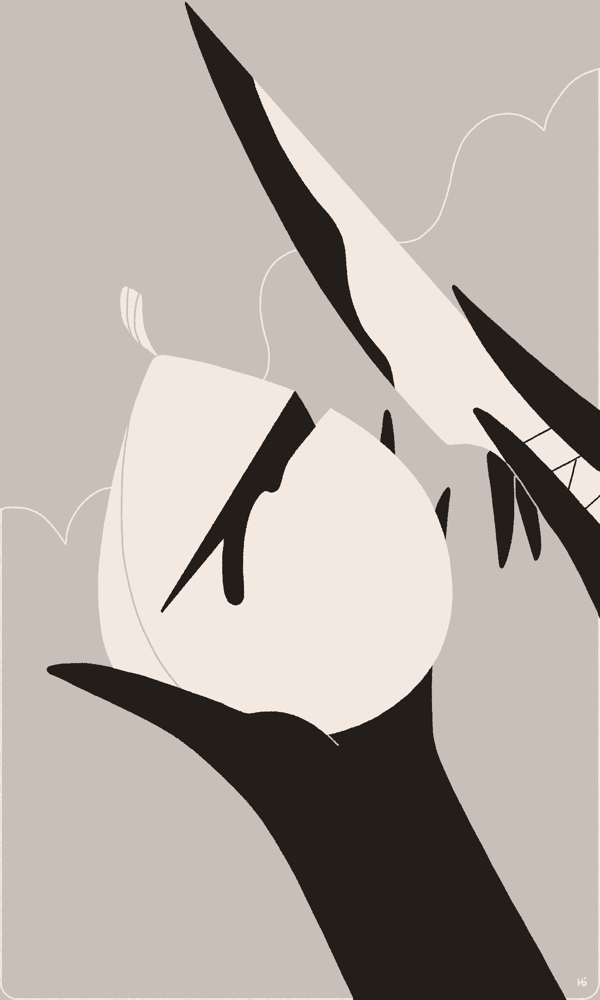
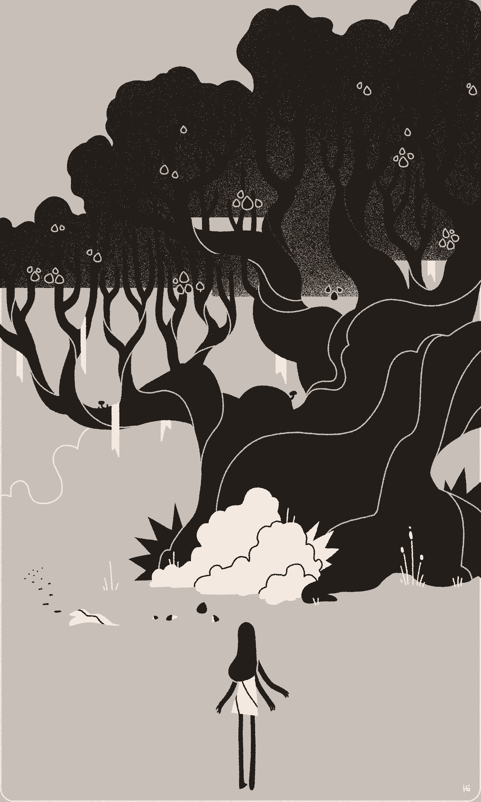
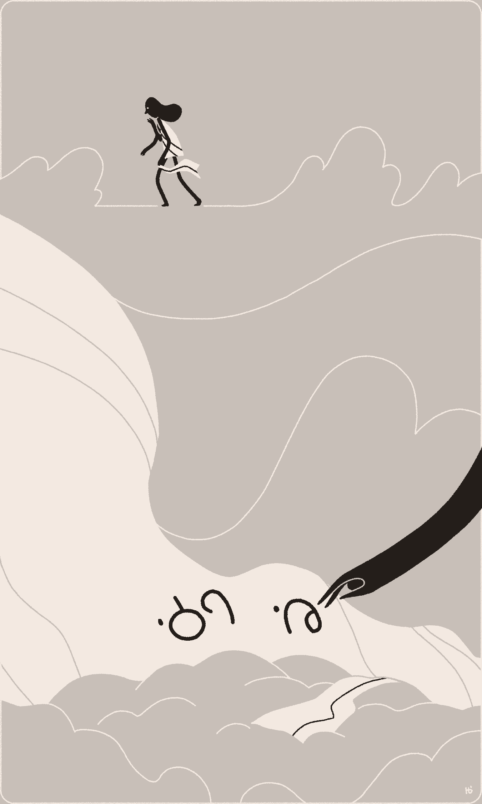
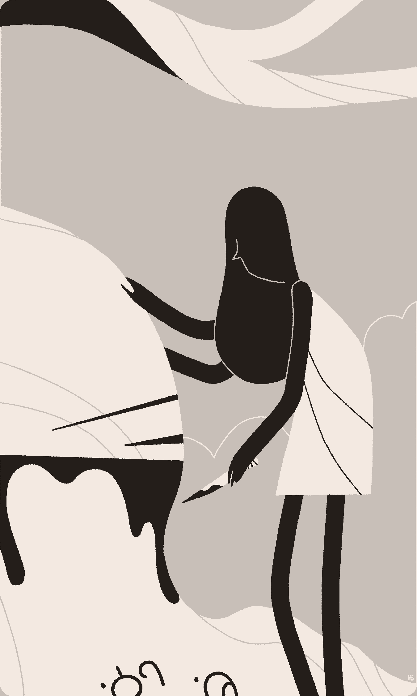
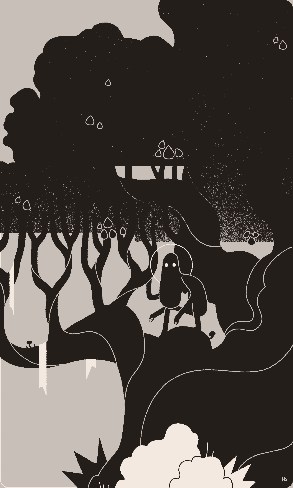
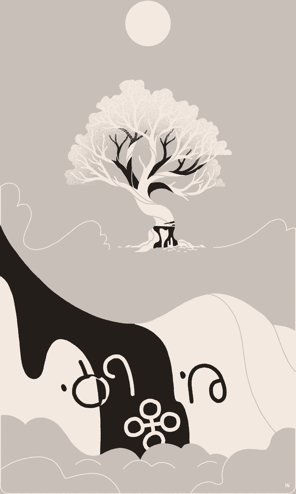

Lilith and Ēv buried Adem beneath the withering Tree of Wisdom, on the dusty banks of the river known as Intent 1. Lilith drew Adem's name on the tree, as she had done for so many others, then looked up toward the branches. Only a handful of fruit remained.
Ēv pointed to the second tree, dark but barely visible on the horizon, and asked why they still hadn't eaten from its abundant fruit.
Lilith responded: eating from the Tree of Life would fill their bellies, but at the cost of their minds. If they ate from it, they'd lose themselves and live as beasts.
Ēv finished decorating Adem's grave in silence.

Time passed, and the Tree of Wisdom gave its final fruit.
Lilith cut the last fruit in two, and offered half to Ēv. Despite their hunger, they insisted that Lilith eat it all. Ēv was younger and stronger, and knew how Lilith suffered during her exile from the Garden. That was before Ēv was born from Adem's side. Before the Elohim abandoned them.
Lilith gratefully accepted, ate, and then fell asleep.
The next morning, Lilith awoke alone, and knew that Ēv had gone to the Tree of Life. She followed.

The Tree of Life was wide and overgrown, covered with vines and moss. The thick branches reached skyward and were filled with fruit. Brambles and tall grass grew at its roots in stark contrast with the dusty steppe around them.
Ēv was no longer there, but left a trail of half-eaten fruit, clothing, and footprints that led into the desert. They were gone.

After returning to the Tree of Wisdom, Lilith laid Ēv's torn clothing on the dirt and drew their name beside Adem's.
Had Ēv ascended like many of the others? Had Adem? What virtue could be found alone, with no other to share it with?
She was filled with rage. At the Elohim. At her new, second exile. At how she was now alone — cursed with art and language and mind. A mother of demons.
She resolved to end this.

Lilith turned toward the Tree of Wisdom and cut a ring around the trunk. Sap poured out. It would surely die now, and she could never come back. She began to draw her own name on the tree by the others, paused, and then drew a new name.
She walked back to the Tree of Life, gathered fruit from its laden branches, ate her fill, and fell asleep in the soft grass at its roots.

She awoke, no longer knowing herself or her loss — only the heat from the sun, the scent of dust from the dry riverbank, and shelter within the briars.

As the Tree of Wisdom died, beneath a name drawn on it, a small worm slept in the sap and began to dream. That worm's dream grew and bloomed into2 the Realms.